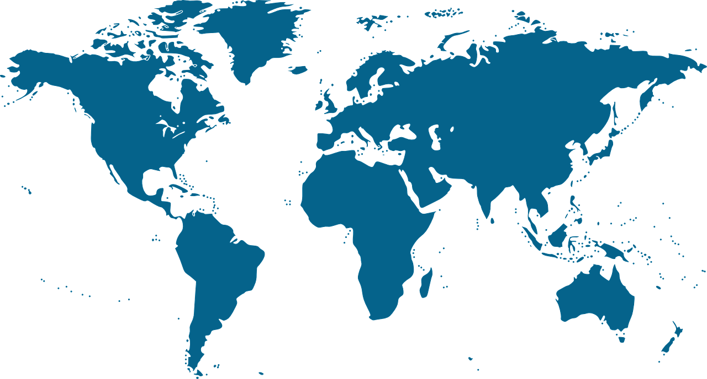
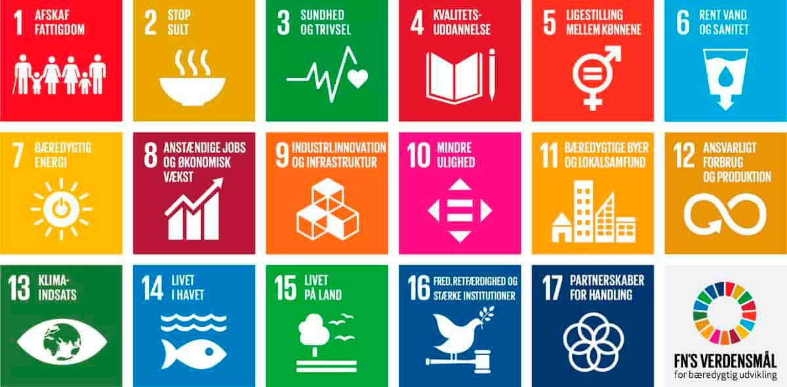

GCP - Hvad er det?

Formålsbeskrivelse
Global Citizenship programmet har to overordnede formål. For det første skal det skabe forudsætningerne hos Rysensteens elever for at kunne uddanne sig i udlandet og sidenhed arbejde i internationalt orienterede virksomheder, institutioner eller NGOer. For det andet skal det gøre Rysensteens elever til verdensborgere, der har evnerne og modet til at reflektere over både egne og andres værdier i mødet med fremmede kulturers mangfoldighed. Og som med en stærk forankring i egne, demokratiske værdier, respekterer forskelle i tradition, sprog, religion, vaner og livsform, og er indstillet på – forskellene til trods - at forstå og tage ansvar for løsningerne på globale problemstillinger
FNs 17 verdensmål
På Rysensteen Gymnasium mener vi, at den globale borgers centrale evner er viden og evnen til at reflektere på en nuanceret måde over "den anden" og ikke mindst sig selv, når man engagerer sig i møder med udenlandske kulturer. Men disse evner kan ikke stå alene. Vi tror på, at et globalt borgerskab kun bliver udfoldet, når de bruges til konkret handling. Derfor er FNs 17 udviklingsmål integreret i Rysensteen Gymnasiums Global Citizenship Programme. Det betyder, at alle fag er forpligtet til at inddrage målene i deres læreplaner, og at mange ekstra-curriculære aktiviteter fokuserer på at fremme et eller flere af målene for bæredygtig udvikling. Det er vores håb, at vi kan yde et beskedent bidrag til at fremme FNs mål for bæredygtig udvikling gennem Global Citizenship Programmet.
Rysensteenere i verden

Ud i verden på egen hånd: Rysensteen Gymnasium sender hvert år op mod fem 3g-elever ud i verden som en del af deres gymnasieforløb - bl.a. med økonomisk støtte fra skolens Jubilæumsfond.
Læreplan og progressionsplan
Baggrund for Global Citizenship Programme på Rysensteen Gymnasium

På Rysensteen Gymnasium har det grundlæggende værdisæt siden 1990'erne været rundet af en demokratisk omgangsform både i undervisningen og i skolekulturen generelt. Eleverne har altid haft medindflydelse i mange beslutninger, har deltaget aktivt i evalueringsopbygninger og har ofte påtaget sig et stort ansvar ved planlægning af tiltag på skolen eller ved tilrettelæggelse af arrangementer. Dette blev i 2011 udbygget med en stor international satsning kaldet Global Citizenship Programme, der udover partnerskoler over hele verden til alle spor også har resulteret i en læreplan, der nøje beskriver, hvordan vi arbejder med programmet i den daglige undervisning. I 2015 blev Rysensteen Gymnasium godkendt som international profilskole for dette arbejde.